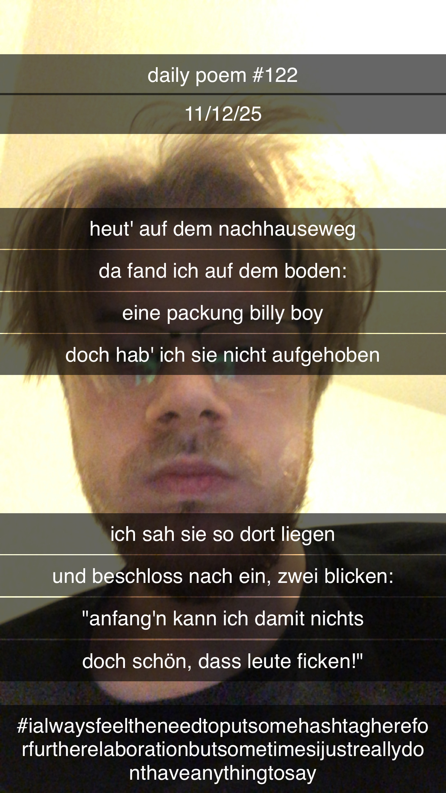

Heut' auf dem Nachhauseweg
[122]Heut' auf dem Nachhauseweg,
Da fand ich auf dem Boden:
Eine Packung Billy Boy,
Doch hab' ich sie nicht aufgehoben;
Ich sah sie so dort liegen
Und beschloss nach ein, zwei Blicken:
"Anfang'n kann ich damit nichts,
Doch schön, dass Menschen ficken!"
